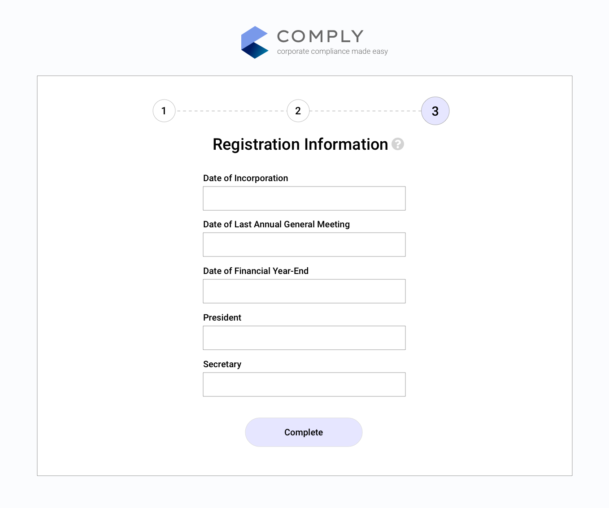

Product Design
Helping small business owners manage their corporate government requirements
about
Comply is an online service to help small business owners manage the overhead of corporate compliance. It breaks down the complicated administrative work into a simplified and automated workflow.
This project won first prize at The Justice Hack 2019, a 2-day legal tech Hackathon targeting Access to Justice challenges facing small-to-medium sized businesses. I was the Designer in a team with a Product Manager, Data Analyst, and a Small Business Owner.
role
UX/UI Designer
context
Team hackathon project
timeline
24 hours
methods
Market Research
Persona
Value Proposition Canvas
Service Blueprint
Wireframes
High Fidelity Mockups
PROBLEM
The pains of incorporation
Small businesses can gain a lot of benefits from incorporating. However, this comes with the burden of maintaining compliance with government regulations which can be extremely overwhelming to both new and seasoned business owners. The lack of knowledge may even keep business owners from incorporating.
Not only is there a financial burden, but dealing with these tasks take away from time that owners can use to actually run their businesses. Reports say that this additional work takes an average of 80 hours a year regardless of size of company. That’s two whole work weeks just to stay compliant.
SOLUTION
Corporate compliance made easy
Comply is an online service that intends to make the Corporate Compliance process easier. The key goals are to automate the process as much as possible and help track a business’ compliance requirements so the owners don’t have to.
Dashboard
This main view shows an overview of the corporation’s compliance requirements organized into modules. Each module has associated tasks with deadlines highlighted when an action should be taken soon. Help information can also be easily found for each module.
PROCESS
Sprint from start to finish
Market Research
Although one of our team members has personally experienced the pains of corporate compliance, we wanted to make sure we are addressing a wide scale problem by looking for data and research to backup our assumptions.

Data from reports such as this Research Snapshot from CFIB gave us insights into government related costs facing real businesses today. We also talked to mentors that work in the legal field to confirm our research and broaden our understanding of requirements that corporations typically face.
With these statistics in mind, we are confident that there is a large demand in this space for a solution that addresses these concerns.
Persona
Sally is a Flower Shop owner that incorporated for the benefits it gives to her business. But she is overwhelmed by the overhead work in order to stay compliant. She just wants to run her business which is already enough work as is!
While this was a fairly basic persona without much extra detail, being able to work with her in mind helped us stay focused on the core concept and not drift off in tangent directions, which is very important given the short timeframe of a hackathon.
Value Proposition Canvas
With a better understanding of our market and audience, we created a value proposition canvas to ensure we have a good product market fit.
The customer pains we want to address are mainly the lack of time, money, and knowledge when it comes to dealing with compliance. The biggest gain for them would be being able to focus on their business and not have to worry about this at all. We solve their problems by automating the process and helping them track responsibilities.
Wireframes
I took the Value Propositions we came up with to inform the UI elements necessary to implement them. This allowed me to work fast and build an MVP that addresses the problem. This resulted in quick wireframes which gave our ideas an interface and basic information architecture.

{kind=link}
{kind=link}
{kind=link}
{kind=link}
{kind=link}
{kind=link}
{kind=link}
Final Design
Since we didn’t have a developer on our team to build a functional demo, we decided to use InVision to demonstrate our interaction flow. Although I could have built a basic frontend for this interface, it would not have been a very good use of my strengths given the time constraints.
The UI was designed to be simple and minimal so it doesn’t get in the way. Using Cards to display each module was a natural choice as it organized each requirement and associated tasks into consistent elements. This will also make it naturally responsive for mobile use.
{kind=link}
Notification dots make it clear when certain tasks have to be completed soon. They are also sent out through Email, SMS, and other channels that the business owner prefers. The owner will have peace of mind knowing they won’t forget an important task.
{kind=link}
{kind=link}

The InVision prototype can be found here.
Sometimes an Invision prototype is all you really need to communicate the initial idea. After presenting it, we got some comments thinking we actually developed the entire interface!
OUTCOMES
Winning my first hackathon
{kind=link}
As mentioned at the top, this project actually won first prize out of the 8 teams that competed that weekend!
Here are some factors that I believe contributed to the result:
Addressing a real problem
While many other teams focused on the “hacking” part, we spent a lot of time looking at problems that people actually face and how we can improve their situation. Just throwing technology at a problem is not enough to solve it.
We may not have had the most technical project that day, but it was certainly one of the most impactful solutions that would help many business owners today.
“You have a very sound business model, it really would be a shame if you didn’t pursue this further” - One of the judges, paraphrased
Communication is key
We used a storytelling approach in our presentation with our persona and it was very effective at communicating the problem and where our solution fits in. Knowing that our audience (in this case, the judges) were not all working in technical fields, we framed the problem in a way that is relatable even if you don’t own a business.
{kind=link}
The first comment we got from a judge was when we were going to build it because he needs this service for his own business! That's how you know we were effective at selling it.
Embracing the UX Process
Even though we did not have a developer, we focused on our strengths to flesh out a great product idea. Our focus was creating a good product market fit and staying aligned as a team due to the short time and scope. The persona definitely helped in that regard.
As the UX Designer, I led the team through much of the ideation process and it was a very fulfilling experience to see the design process I learned take form in such a way. It gave me a big confidence boost as a designer and I feel like I can apply what I learned in school to a real world situation now.
{kind=link}
next project